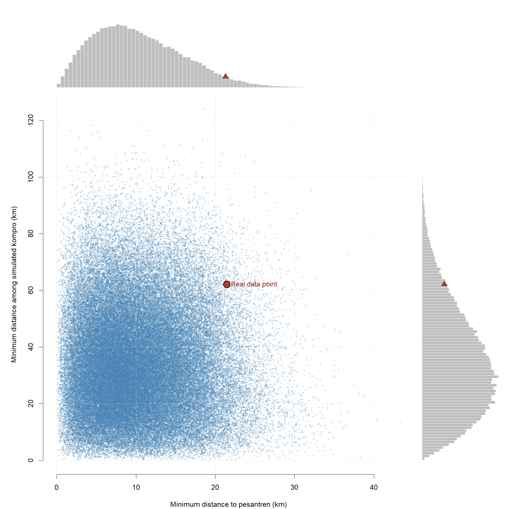

This notebook-style page summarizes the minimum-distance analysis and embeds the static figures together with the interactive 3D histogram.
The substantive question is whether communist camps (kompro) and Islamic boarding schools (pesantren) are spatially repulsive to each other.
If that repulsion assumption is relaxed, then many alternative spatial arrangements become possible. Under that non-repulsive random model, a large number of potential locations for kompros and pesantrens were generated.
For each simulated arrangement, two minimum-distance statistics were calculated:
The same statistics were also calculated from the empirical data. The purpose of the figures below is to compare the empirical point to the bootstrap or simulation distribution.

(P, K) bin.
Note: P means minimum distance to pesantren, while K means minimum distance to simulated kompro.
If the empirical point falls in a dense region of the simulated surface, then it looks more consistent with the random non-repulsive model. If it falls in a sparse region or near the edge of the simulated surface, then it looks less consistent with that model.
Overall, the figures suggest that the non-repulsive model is not a good description of the observed pattern. In that sense, it seems the assumption of a non-repulsive spatial relationship is rejected by the empirical configuration.